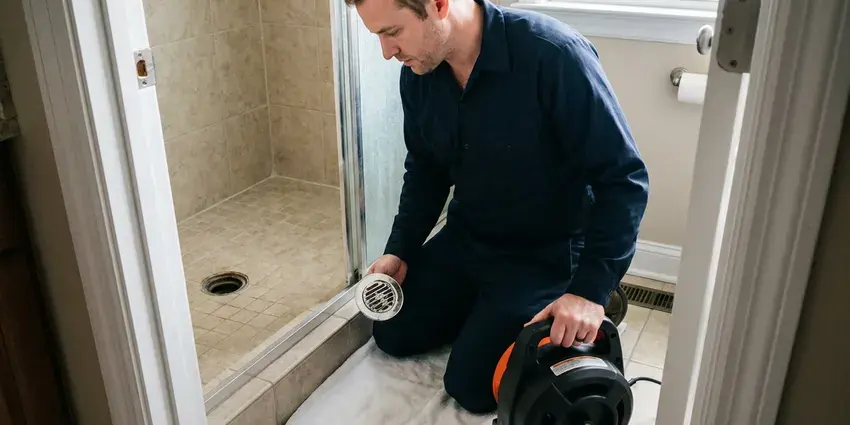
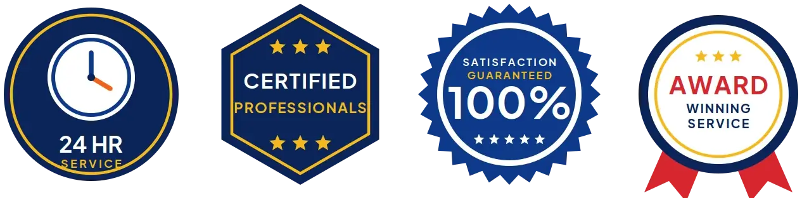
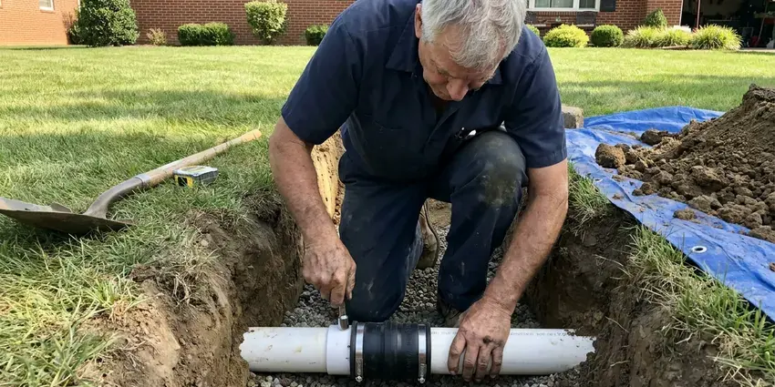
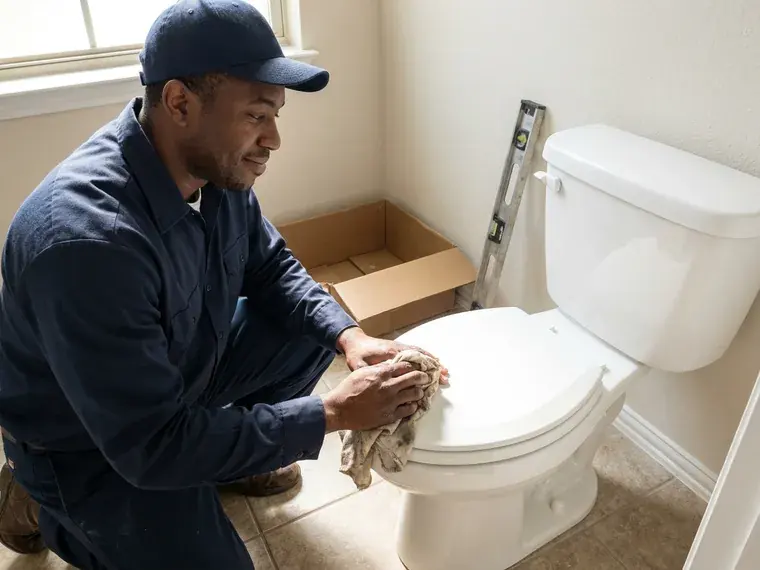

Hydro Jetting in Waimalu, HI
For tough blockages in Waimalu, HI that traditional methods can't clear, hydro jetting from HKL Plumbing is the answer.
- Same-Day Jetting Available
- Residential and Commercial Units
- Pipe-Safe Pressure Settings
- High-Pressure Technology

Need Powerful Drain Cleaning in Waimalu, HI?
Contact HKL Plumbing today for dependable and efficient hydro jetting that gets your pipes flowing freely again.
Powerful Hydro Jetting for Tough Clogs in Waimalu, HI
HKL Plumbing uses hydro jetting to clean drain and sewer pipes with water at pressures typically in the 3,000 to 4,000 PSI range for residential work. Specialized nozzles push rear-facing jets that scrub the pipe wall while pulling the hose forward.
Our expertise includes:
- Preventative maintenance hydro jetting for businesses
- Cart and trailer jetters for homes and commercial lines
- Rotating, root-cutting and penetrating nozzle selection

Additional Drain Services Services in Waimalu, HI
From stubborn kitchen clogs to main sewer backups, our drain services in Waimalu, HI restore full flow fast and keep it that way.


Drain Cleaning service for Waimalu homeowners



Professional sewer line replacement, Waimalu


Customers
Why Choose HKL Plumbing for Hydro Jetting in Waimalu, HI?
A cable punches a hole through a blockage, but grease and scale stay on the pipe walls and catch new debris. Jetting removes that coating so the line stays clear much longer.
- Deep Clean, Unlike traditional snaking, hydro jetting completely cleans pipe walls, removing all debris.
- Full-Wall Cleaning, Jetting scrubs the pipe circumference instead of leaving a thin channel through the clog.
- Tough Blockages, It effectively breaks apart grease, mineral scale, sludge, and even invasive tree roots that snaking cannot fully dislodge.
Citywide Coverage
HKL Plumbing is proud to offer full hydro jetting service across every neighborhood of Waimalu. From older districts with aging pipes to newer developments, we understand the plumbing challenges faced by residents here.
Experienced Team
Each member of our team is certified and stays up-to-date on hydro jetting techniques and safety protocols. You can trust their expertise to diagnose your drain issue accurately and apply the best solution.
Safety-First Approach
Before starting hydro jetting, we often conduct a camera inspection to make sure your pipes can handle the high pressure, preventing potential damage. This careful approach gives a safe and effective cleaning process for every job in Waimalu.
Trusted Certified Waimalu Plumbing Services Professionals
At HKL Plumbing, we take pride in providing licensed, certified plumbing services throughout Waimalu, HI. Backed by recognized industry credentials, our experienced plumbers combine technical skill with genuine customer care. Whether it is repair, installation, or maintenance, we follow strict safety and quality standards to deliver lasting results you can trust.
Call Us Now PHCC Plumbing Contractor Recognition
PHCC Plumbing Contractor Recognition Better Business Bureau (BBB) Accreditation
Better Business Bureau (BBB) Accreditation Angi Certified Pro
Angi Certified Pro ISO 9001 Quality Management Certification
ISO 9001 Quality Management CertificationExpert Hydro Jetting Solutions in Waimalu, HI
Tree Root Removal with Hydro Jetting in Waimalu
Tree roots are a common problem in Waimalu, HI, especially where mature landscaping grows over older sewer lines. Roots can work into tiny cracks in pipes and grow, causing severe blockages. Hydro jetting uses a powerful stream to cut through and flush out these invasive roots. This method is far more effective than snaking for complete root removal and preventing their rapid regrowth.

Hydro Jetting for Hard Water Scale in Waimalu
Some rural homes in Hawaii rely on rainwater catchment, which needs good filtration and disinfection to keep tanks and fixtures in safe shape. Even moderate mineral content can lead to scale buildup in pipes over many years. This scale can restrict flow and trap other debris, leading to clogs. Hydro jetting is highly effective at breaking down and flushing out these hard mineral deposits, restoring the full diameter of your pipes. This is a superior method compared to chemical treatments for scale removal.
Hydro Jetting Before Pipe Lining in Waimalu, HI
Cured-in-place pipe lining needs a clean surface to adhere and seal correctly. We jet the host pipe to remove roots, scale and debris, then camera it to confirm it is ready. Any heavy obstructions are cut out before the liner is installed. Skipping this step can lead to wrinkles or poor bonding. Proper prep is part of why lined pipe can last for decades.
Camera Inspection and Hydro Jetting in Waimalu, HI
Before performing any hydro jetting, especially for challenging clogs, HKL Plumbing always recommends a thorough sewer camera inspection. This lets us precisely locate the blockage, identify its nature, and assess the condition of your pipes. This important step confirms that hydro jetting is the right solution and helps us select the correct pressure and nozzle, safeguarding your plumbing system in Waimalu, HI.
Hydro Jetting vs. Snaking Cost Comparison in Waimalu, HI
While snaking might be cheaper upfront for simple clogs, hydro jetting offers a more complete and long-lasting solution, often saving money in the long run for Waimalu, HI residents. Snaking usually punches a hole through a blockage, leaving residue behind, which can lead to recurring clogs. Hydro jetting cleans the entire pipe, preventing future issues and reducing the frequency of service calls, making it a more economical choice for persistent drain problems.
Emergency Hydro Jetting in Waimalu, HI
A completely backed-up drain or sewer line requires immediate attention. HKL Plumbing offers emergency hydro jetting across Waimalu, HI, to address critical blockages quickly. Our technicians are available to respond promptly, minimizing water damage and restoring your plumbing as soon as possible. We understand that some clogs just cannot wait.
High-Pressure Water Jetting for Drain Cleaning in Waimalu
High-pressure water jetting, or hydro jetting, is a non-invasive method that uses highly pressurized water to clear and clean pipes. Our equipment in Waimalu can generate water pressures up to 4,000 PSI, powerful enough to break apart stubborn blockages and scour pipe walls clean without chemicals. This method is effective for many pipe materials, from PVC to cast iron, and is an eco-friendly choice for deep drain cleaning.

Commercial Hydro Jetting in Waimalu, HI
Businesses in Waimalu, HI often deal with high volumes of waste and specific types of buildup, such as food grease in restaurants or industrial debris. Our commercial hydro jetting is designed for the larger, more complex plumbing systems found in commercial properties. We thoroughly clear heavily impacted lines, preventing costly downtime and keeping your business running smoothly. This service is key for maintaining health code compliance and avoiding severe backups in high-usage settings.
Expert Hydro Jetting Near Me in Waimalu, HI
When you search for hydro jetting near me in Waimalu, HI, HKL Plumbing is your reliable local expert. We are very familiar with the plumbing infrastructure and common issues affecting homes and businesses throughout the area. Being close by means faster response times and reliable service when you need it most.
Our team lives and works right here in Waimalu, giving us a real understanding of local plumbing challenges, from tree root intrusion to local soil conditions. We are committed to giving our neighbors the most effective and durable hydro jetting available, with your satisfaction on every service call.
HKL Plumbing at a Glance
- Licensed and insured plumbers serving Waimalu, HI
- 24/7 emergency service with same-day scheduling
- Clear written estimates, no hidden fees
- 4.8-star rated by 529+ Hawaii customers
Waimalu Map
Waimalu Information
- Population
- 13,817
- Area codes
- Local
- Service area
- Waimalu and communities within 40 miles
- Nearby
- Aiea, Halawa, Pearl City, Waipio
Hydro jetting is especially important for homes in Waimalu, HI due to tree root intrusion into sewer lines and the buildup of mineral deposits and grease common in older plumbing systems.
Expert Services
Trust our professionals for reliable HKL Plumbing solutions in Waimalu, HI.
Our Specialized Plumbing Services in Waimalu, HI
At HKL Plumbing, we provide a complete range of plumbing services across Waimalu, HI. From leak detection to full system installations, our team ensures fast, precise, and affordable service for both residential and commercial properties. Explore our core services below:


How Our Hydro Jetting Process Works in Waimalu, HI
HKL Plumbing follows a systematic approach to make sure your drains are cleaned completely and safely.
Request a Quote
Call (808) 649-6718 and tell us about the clogs you are having and how often. We schedule an inspection and give you a ballpark price.
Inspect the Pipe
We run a camera to check pipe material, condition and the cause of the blockage. This tells us the safe pressure and the right nozzle.
Jet and Verify
We jet the line in passes until the walls are clean and the water runs clear. A final camera run confirms the result.
Frequently Asked Questions About Hydro Jetting in Waimalu
The cost of hydro jetting in Waimalu, HI can range from $300 to $800, depending on the severity of the clog, the length and diameter of the pipe, and whether camera inspection is required. More complex jobs, like removing extensive tree roots or cleaning long commercial lines, may be on the higher end. We provide a clear estimate after assessing your situation.
While hydro jetting is very powerful, it is generally safe for most sound plumbing systems, including PVC, cast iron, and concrete pipes. However, it is not recommended for severely damaged, corroded, or fragile pipes, which is why a pre-jetting camera inspection by HKL Plumbing is crucial to assess pipe integrity and prevent further damage.
HKL Plumbing uses professional-grade hydro jetting equipment from trusted manufacturers like Spartan Tool and MyTana. These brands are known for their reliability, powerful performance, and safety features, so we can deliver the most thorough cleaning for your pipes.
The duration of a hydro jetting service in Waimalu varies depending on the severity and location of the clog. A typical residential drain might take 1 to 2 hours, while a major sewer line or commercial job could take 3 to 4 hours or more. Our technicians work quickly to minimize disruption.
Snaking uses a rotating cable to break through a clog. Jetting uses pressurized water to clean the entire pipe wall and flush debris away.
For most modern and well-maintained pipes, hydro jetting is very safe. However, for very old, corroded, or severely damaged pipes, the high pressure could cause further damage. That is why HKL Plumbing always performs a camera inspection first to check your pipe's condition and confirm hydro jetting is appropriate.
For most homes in Waimalu, hydro jetting every 1 to 3 years can be a good preventative measure, especially if you have recurring drain issues or older pipes. Businesses, particularly restaurants, may need quarterly or twice-yearly hydro jetting to manage grease buildup. We can suggest a schedule based on your needs.
It is safe for most pipes in fair condition when pressure is set correctly. We camera the line first and avoid jetting pipe that is broken or collapsed.
What People Are Saying About Our Plumbing Experts?

Robert G.
The trenchless sewer replacement saved our front yard. They walked us through the camera inspection footage first so we knew exactly what we were paying for.
Sewer Line Replacement · Waipio, HI
Emily R.
I called HKL Plumbing for plumbing repair, and the technician was fast, polite, and thorough. They explained the problem clearly and fixed it the same day. I will definitely hire them again. Highly recommended!
Plumbing Repair · Royal Kunia, HIDaniel K.
A pipe burst at 11 pm and they actually answered. The plumber showed up within the hour, shut everything down, and had us back to normal the next morning. Could not ask for more.
Emergency Plumbing · Waimalu, HIJames P.
Our commercial plumbing system had a leak under the sink, and HKL Plumbing handled it professionally. The plumbers arrived quickly and restored everything without disruption to our customers.
Commercial Plumbing · Aiea, HI
Sofia M.
Two new toilets installed in one visit, no mess left behind, and the tech even adjusted a faucet he noticed was dripping. Fair pricing and really friendly.
Toilet Installation · Aiea, HI
Mark T.
When our office needed drain cleaning, HKL Plumbing provided quick, reliable service. The plumber arrived on time and made sure every drain flowed perfectly before leaving. Very satisfied.
Drain Cleaning · Halawa, HI